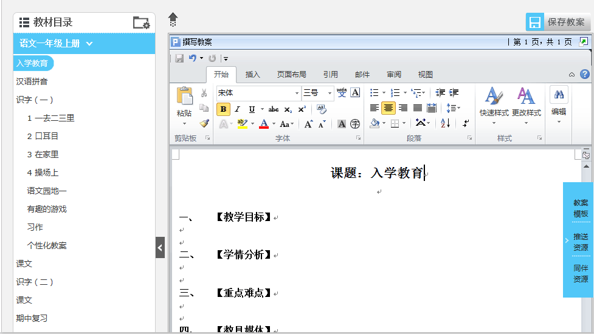
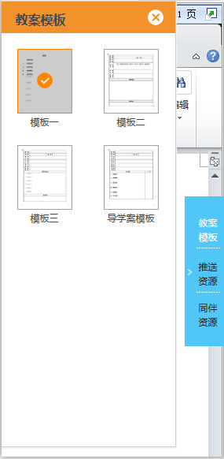
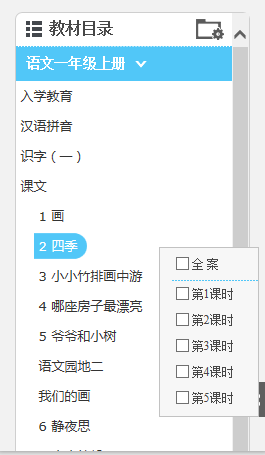
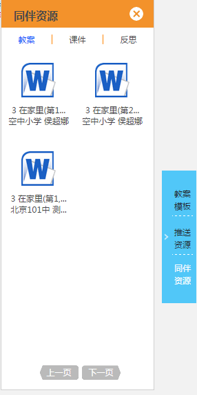

三 使用说明
3.2教师工作室
3.2.1 撰写教案
1、进入“撰写教案”页面
在教师工作空间首页，点击我的工作项中的“撰写教案”图标，进入“撰写教案”页面（如图3.2.1-1）。
图3.2.1-1
2、选择教案模板
用户在撰写教案前，需先选择“教案模板”（系统默认使用“模板一”），然后点击相应的“课题目录”选择相应的课时。
系统默认推送5个教案模板（如图3.2.1-2），用户可以根据自己的需要，选择相应的模板进行备课。
图3.2.1-2
3、选择课题
系统会根据用户的个人信息或用户选择的身份自动推送该年级、该学科、该版本上下学期的课题目录（如图3.2.1-3）。
图3.2.1-3
用户点击相应的教材目录后，弹出选择“课时”信息框，用户可以根据自己的实际情况选择相应的课时进行撰写教案。已备课时系统会自动填充选择框，无法再次选择。
4、使用推送资源
系统根据用户所选的课题自动推送参考“教案”、“课件”、“习题”和“素材”资源（如图3.2.1-4）。其中“素材”分为文档、图片、音频、视频四类进行推送。免去用户查找麻烦，真正实现帮忙不添乱。

图3.2.1-4
5、使用同伴资源
系统根据用户所选的课题自动推送区域内同年级同学科的同伴已分享的有关本课题的“教案”、“课件”、和“反思”资源，供用户进行“查看”和“下载”（如图3.2.1-5）。
图3.2.1-5
6、撰写并保存教案
用户可根据需要使用上述资源，结合自身情况在word界面内进行编辑，撰写完教案后，点击“保存教案”按钮，所备教案即可成功保存至“我的备课本”中，用户可以在备课中进行查看（如图3.2.2-1）。